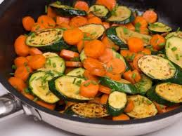

Vegetable Rice

Description
Adapted from Kenneth Lo's recipe for simple vegetable rice in 'Cheap Chow' (1977).
Served along with Red Cooked Lamb for birthdays or other special meals.
Ingredients
- 2 tbsp vegetable oil
- 2 tbsp butter
- 1 tsp salt
- 2 cups long grain rice
- 3 cups water
- 4 tsp brown sugar
- 300g carrots, sliced into 5mm rounds
- 300g courgettes, sliced into 10mm rounds
Steps
- Heat the oil and butter in a large saucepan
- Add the carrots and stir fry over a high heat for 4-6 mins.
- Add the courgettes, salt, rice, and water, and bring to the boil.
- Cover, reduce the heat slightly and simmer hard for 5 mins.
- Turn off the heat and leave to steam with the lid on for 20 mins, after which the rice should be cooked.